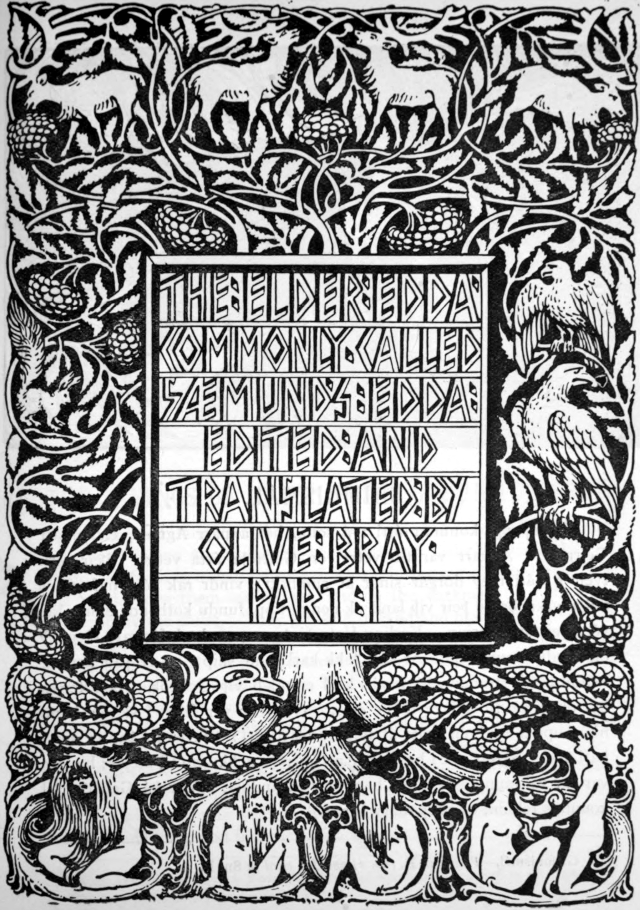
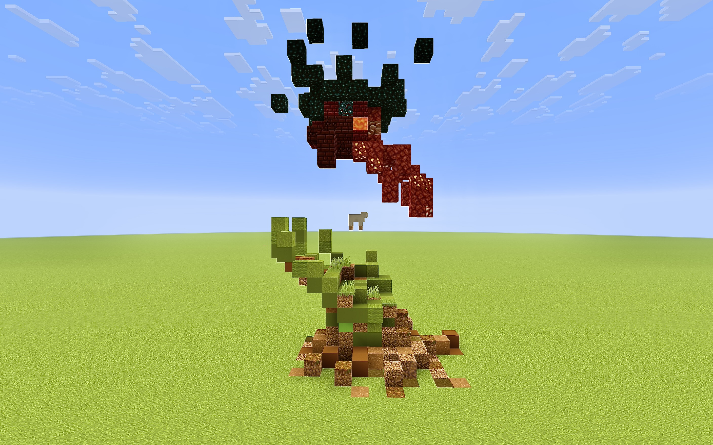

In the middle of the photo, you can see a small, minecraft sheep. This symbolises the innocent lamb, and the two opposing powers fighting over the lamb. The lamb also is an allusion to sacrifice as a metaphor a lot in the bible. So the two forces are fighting over the sacrifice for an unkown reason.
The dark, red hand symbolises the Tyger in the poem "The Tyger", as a force that is filled with experience, violence and fear. It represents what is commonly known as evil and it is one half of humanities side. It wants the lamb as a sacrifice out of its own greed.
The green, nature looking hand symbolises a creator, or in Christianity, God. It represents experience on a wiser, loving level. It understands everything including the Tyger hand's values. The question that arises from the creator is why did he make the Tyger. The Creator hand also represents the other side of humanity that is loving and caring - made in the creator's image.
The two hands are different, as you can observer the difference in colour. But the overall structure and positioning are the same. This raises the question on why did the creator make "evil" and make it so powerful. This question is the big question used in The Tyger